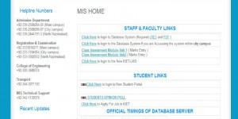
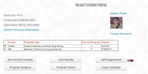
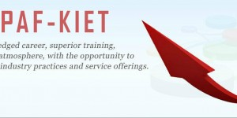

Services:
|  |  | |
| The Management Information Systems (MIS) Department of Computer Services is dedicated to making the PAF-KIET operate more efficiently through the use of software. MIS supports the University’s computing needs by writing custom software, investigating the system and identifying how existing software can be augmented or used more effectively. | KIET LMS is an online Learning Management System provide a common, easy-to-use framework for faculty & Students that offers all required options / processes to be used during the semester. All the current semester students and teachers are automatically enrolled in their registered courses at PAF KIET. |
The Higher Education Commission (HEC) has made a policy decision to direct all Higher Educational Institutions (HEIs) to establish. It has also issued Guidelines for the establishment and monitoring of QECs. QEC attempts to survey all aspects of university functioning, bringing them at part with international standard. |
|  | ||
| The objective of Corporate Relations Department is to establish and maintain contacts with the decision makers in the corporate world. This effort would provide guidance to the institute towards offering job-oriented programs and contributing to the development of the industry and economy. | The PAF-KIET offers exciting, challenging and rewarding careers to those who seek opportunities to grow and succeed. Our University is well known as a top Engineering & Technology institution that values each person’s contribution to innovation. |
Our dedicated team in Corporate Relations Department is always ready to maintain strong interaction with all our graduates to facilitate variety of benefits and services. Alumni play a vital role in job placement, internships. |